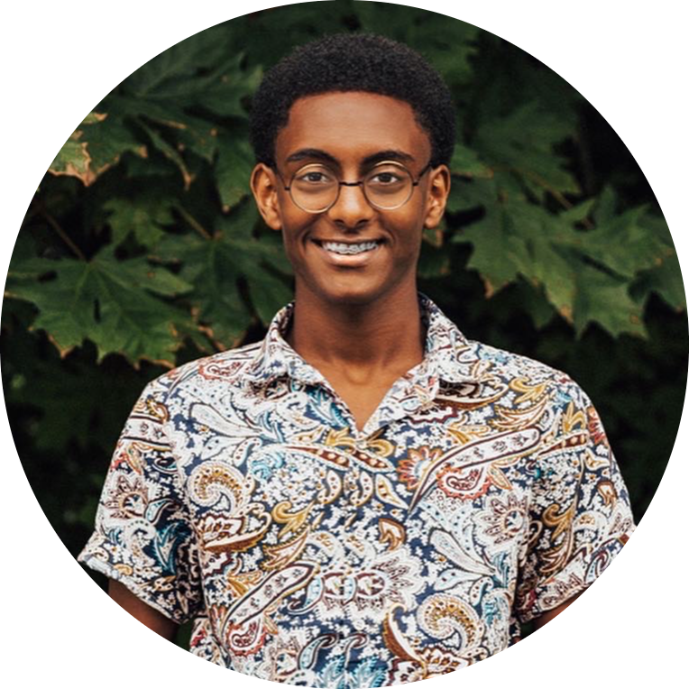

|  |
Nahom AzmachComputer Science and Biology Student at Western Washington University |
A highly motivated and driven individual, I am currently pursuing a Bachelor of Science in Computer Science at Western Washington University with a minor in Biology. Recognized as a high-potential student, I was nominated for a mentorship program, which matched me with a Senior Software Engineer at Microsoft. This experience enabled me to gain invaluable insights into the industry and develop a deeper understanding of the skills and attributes required for success. I have experience leading and supervising outdoor excursions for groups of students, organizing the logistics of the excursions, and providing personalized customer service as a Guest Services Associate at Target. I have also developed skills in reverse engineering, information security, and frequency experimentation. My academic accomplishments include earning a Varsity letter in three sports, being a research assistant in a research lab concerning blood coagulation and Factor IX, and receiving the student of the year award for my high school. Through my volunteering, I have had the opportunity to collect school supplies for students in need in Ethiopia. I am passionate about utilizing digital resources, professionalism, customer service, strategic planning, risk management, adaptability, teamwork, and philanthropy to make a positive impact.